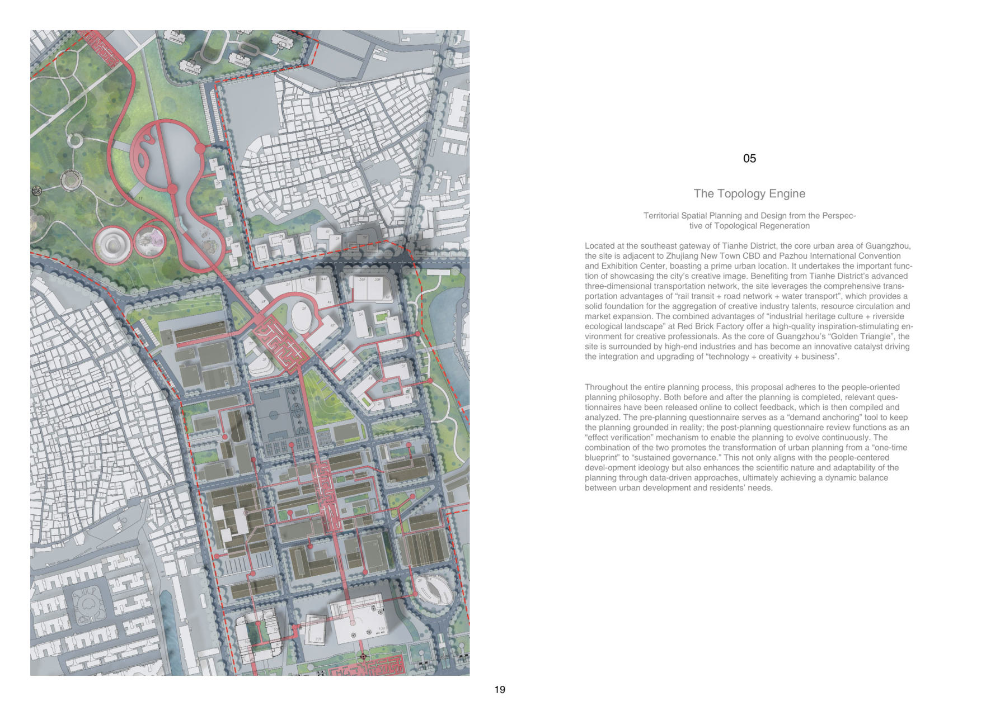
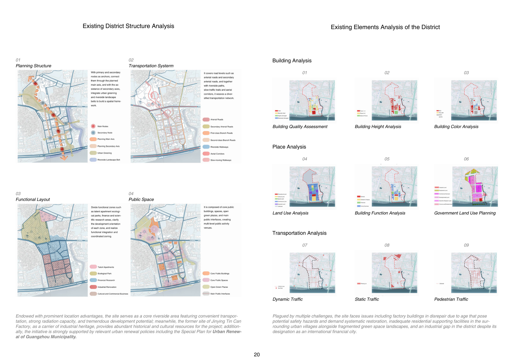
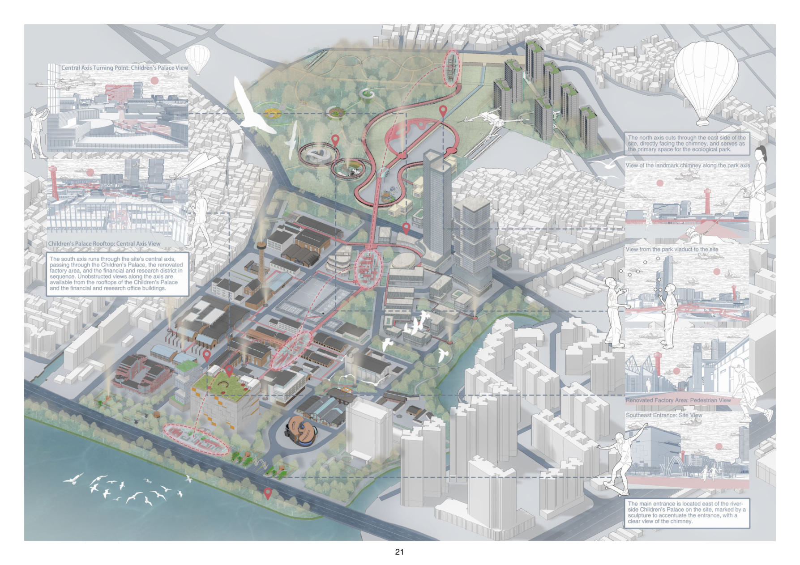

Territorial Spatial Planning and Design from the Perspective of Topological Regeneration
Located at the southeast gateway of Tianhe District — the core of Guangzhou's "Golden Triangle" — the site sits adjacent to Zhujiang New Town CBD and Pazhou Convention Center, adjacent to the industrial-heritage riverside of the Red Brick Factory. Its combined advantages of industrial heritage culture + riverside ecological landscape offer a high-quality environment for creative professionals.
Throughout the planning, a people-oriented philosophy drives both pre- and post-planning questionnaires: the first anchors demand in reality, the second verifies effect. The pairing transforms urban planning from a "one-time blueprint" to "sustained governance" — data-driven, evolving, and dynamically balanced between urban development and residents' needs.


